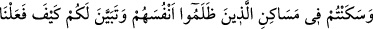

yapmadığımız dâveti kabûl etme ve peygamberlere uyma’ işlerini telâfi edelim.
“diyecekleri gün” yâni kıyâmet günü ya da ölecekleri gün “hakkında insanları uyar.”
bütün insanları bu hususta korkut. Çünkü ölecekleri gün, ölümün sekerâtı ile azâba
uğrayacakları azab günlerinin ilkidir. Buradaki korkutma asıl olarak kâfirlere, ikinci
olarak da azaba uğratılmayacak olsalar bile mü’minleredir.
Kınamak ve suspus etmek maksadıyla onlara denilir ki: “Daha önce, sizin için”
içinde bulunup istifâde ettiğiniz nîmetlere “bir zevâl olmadığına, yemin etmemiş
miydiniz?” Dünyâda size mühlet verilmedi mi? Gururlanıp kibirlenerek kendi dilinizle:
“Bize zevâl yok!’ diye yemin etmediniz mi?!
Onların bu sözü dille değil hâl lisânı ile söylemiş olması da muhtemeldir. O zaman
mânâ şöyle olur: “Dünyâda iken sağlam binâlar yapmış, çok uzun emellere kapılmış ve
kendinize bu hâlden başka bir hâle geçeceğinizi hiç telkin etmemiştiniz.” Burada onlara
verilen sürenin uzatıldığı hissettirilmektedir: “Hesap görmek üzere sizin için bu
dünyâdan öteki dünyâya zevâl yoktur.”
Buna göre birinci mânâ ölümü inkâr etmeleri, ikinci mânâ ise öldükten sonra
dirilmeyi (ba‘s) inkâr etmeleri esas alınarak verilmiş oluyor.
et-Te’vîlâtü’n-Necmiyye’de şöyle diyor: Bu ifâde ile tenâsühe/reenkarnasyona
inananlara işâret vardır. Çünkü onlar, hem kendilerinin hem de dünyânın zeval
bulmayacağına ve bir kimse öldüğü zaman rûhunun başka bir bedene geçtiğine inanırlar.
İşte Allah bu cevabı vererek şöyle demiş oluyor: ‘Sizi dünyâya gönderecek olsak yine
tenâsüh görüşüne sarılacaksınız. Yine daha önceki gibi kendiniz için hiç zevâl
olmadığına dâir yemininize geri döneceksiniz!”
et-Ta‘rîfât’ta şöyle der: “Tanâsüh, ruh ile beden arasındaki zâtî aşktan dolayı rûhun
bir bedenden ayrıldıktan sonra hiç ara vermeksizin hemen bir başka bedene girmesi
(taalluk) demektir.”
45. (Sizden önce) kendilerine zulmedenlerin yurtlarında oturdunuz. Onlara nasıl
muâmele ettiğimiz size apaçık belli oldu. Ve size misaller de verdik.
Sizden önce Âd ve Semûd gibi gerek şirk koşarak gerekse çeşitli mâsıyetler işleyerek
“kendilerine zulmedenlerin yurtlarında” onların irtikâb ettiği kötülükler yüzünden
başlarına gelenlerin sizin başınıza da geleceğini kendinize telkin etmeden “oturdunuz.
Onlara nasıl muâmele ettiğimiz” işledikleri zulüm ve fesâd yüzünden onlara nasıl cezâ
verdiğimiz, nasıl helâk ettiğimiz, hem onların kalıntıları ile hem de mütevâtir haberlerle
“size apaçık belli oldu.”